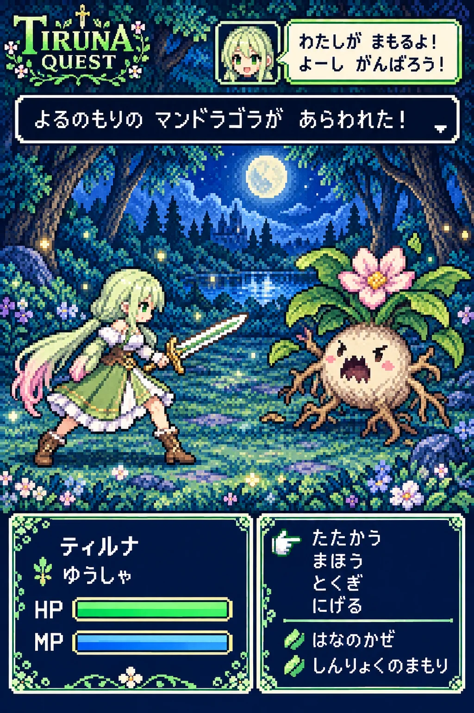
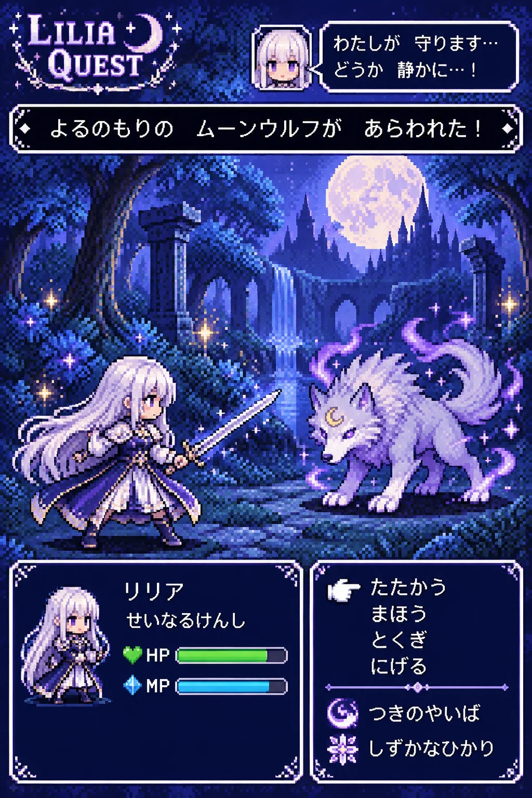
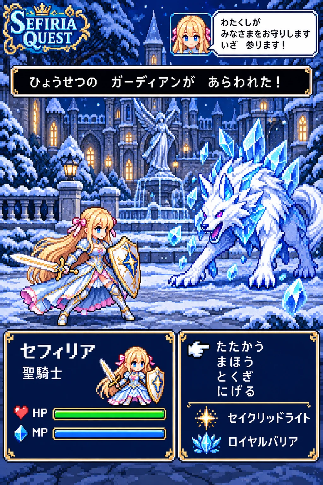

うちの子が勇者の「16bitのドット絵RPGの戦闘画面」ができるプロンプト
ひみつの眠り姫のプロンプト配布
GPT-image-2 用2026-10-26
ChatGPT（GPT-image-2）に自分のキャラの絵を1枚渡して、この文を貼るだけ。昔のゲーム機の16bitドット絵で、うちの子が勇者になって武器をかまえ、月明かりの森で少しかわいい敵とにらみ合う戦闘画面に。上には「〇〇が あらわれた！」のメッセージ、下には名前と職業、HPとMPのバー、「たたかう」「まほう」「とくぎ」「にげる」のコマンドと特技の名前、右上には顔アイコンとセリフの吹き出し。敵の姿と名前も、職業も、特技の名前も、セリフも、AIがキャラを読み取って毎回ちがうものを考えてくれます。名前のほかは空欄でもOK。職業や色・服・背景を決めたいときは、その欄に書くだけです。
作例



※作例の画像の転載・保存しての再配布はご遠慮ください。
3人のおしゃべり（16bitのRPGの戦闘画面）

セフィリア
三人とも、RPGの戦闘画面になりました。わたくしは聖騎士。雪のお城の中庭で、氷雪のガーディアンと向き合っています

ティルナ
わたしのは左上に「TIRUNA QUEST」って書いてある！ 敵はマンドラゴラ。頭にピンクのお花がさいてて、顔がちょっとおこってるの
リリア
わたしは、せいなるけんし。夜の森で、ひたいに三日月のしるしがある、きれいなムーンウルフと向き合っています

ティルナ
三人そろって戦闘中だね！ セフィー、作戦はどうする？

セフィリア
では、作戦を決めましょう。コマンドは「たたかう」「まほう」「とくぎ」「にげる」の四つです

リリア
……わたしは、「にげる」にします

ティルナ
えっ！ リリア、まだなにもしてないよ！？

リリア
ムーンウルフの毛並みが、ふわふわで……斬るなんて、とてもできません
セフィリア
これが今日の配布の「16bitのドット絵RPGの戦闘画面」です。絵と名前を入れるだけで、敵も職業も特技の名前も、セリフまで考えてくれます
ティルナ
わたしは名前と話し方だけ書いたら、職業は「ゆうしゃ」、特技は「はなのかぜ」と「しんりょくのまもり」になったよ！
セフィリア
わたくしは追加の指示の欄に「職業は聖騎士」と書きました。特技は「セイクリッドライト」と「ロイヤルバリア」です
リリア
わたしはテーマカラーを「月の銀色と深い紫」に。ウィンドウのふちとロゴが、その色になりました
ティルナ
じゃあリリア、とくぎの「つきのやいば」は？ かっこいい名前なのに
リリア
……もうひとつの「しずかなひかり」で、ムーンウルフを眠らせてあげたいです。セリフにも「どうか 静かに」と書いてありますから

セフィリア
ふふ。わたくしのガーディアンも、氷の毛並みがきれいで……実は、少しなでてみたいと思っていました
ティルナ
わたしもマンドラゴラのお花、ほしい！ もう三人とも、「にげる」じゃなくて「なかまにする」だね！
リリア
「なかまにする」のコマンドは、ありませんけれど……次の冒険では、あの子たちといっしょに旅ができたらいいですね
使い方（3ステップ）
- ChatGPT を開いて、画像を作れるモード（GPT-image-2）にする
- 自分のキャラの絵を1枚だけ添付する（自分の絵・使ってよい画像だけ。いつもの絵のままでOK。下の「おまけ」で元絵を作った人は元絵を）
- 下のプロンプトをワンタップでコピーして、いちばん上の「▼ ここに書く」の欄（色の付いたところ）にキャラの名前などを書いて送信する（名前のほかは空欄でもOK。服・背景・ポーズを変えたいときは、その欄に書くだけ）
プロンプト
書くのは「▼ ここに書く」の欄だけ
- 色の付いたところ（「：」のうしろ）に書くだけ。【 】は消さずにそのまま残してね
- 下の文章に出てくる【キャラの名前】などは書き換えなくてOK（AIが上の欄を読んでくれます）
- 任意の欄は空のままでも大丈夫（おまかせになります）
- 👗 服・アクセサリー／背景／ポーズを変えたいときは、その欄に書くだけ。欄に書いた内容が下の文章より優先されるように作ってあるので、下の文章は書き換えなくてOK。空欄なら、服とアクセサリーは添付した絵のまま、背景とポーズは下の文章のとおりになります。顔立ち・髪型・髪色・目の色は、いつも添付した絵のままです
- 💡 添付した絵と違う服にしたいときは、色と形まで具体的に書くと混ざりにくくなります（例：「白いニット」より「白いケーブル編みのニットと紺のプリーツスカート」）
- 🚫 添付する絵は自分のキャラ・自分が権利を持つ画像だけ。版権キャラ・他の人のキャラの画像は固く禁止です（下の「配布ルール」）
プロンプト
添付した画像のキャラクターを読み取って、そのキャラが勇者になった「16bitのドット絵RPGの戦闘画面」のイラストを作ってください。 敵の姿と名前、職業、特技の名前、戦闘のメッセージ、キャラのセリフは、キャラの見た目や性格からあなたが考えて作ってください（毎回ちがう結果になってOK）。 ▼ ここに書く（「：」のうしろに書くだけ。【 】は消さずにそのまま。名前だけは必ず書く。ほかの空の欄はおまかせ） 服・アクセサリー・背景・ポーズを変えたいときは、その欄に書くだけ（下の文章は書き換えなくてOK） 【キャラの名前】： 【テーマカラー】： 【服・アクセサリー】： 【背景】： 【ポーズ・追加の指示】： ▲ ここまで（下の文章に出てくる【 】は、上の欄に書いた内容のこと。下は書き換えない） ■ 上の欄の使い方（ここは変えない） ・【服・アクセサリー】が書いてあれば、キャラの服とアクセサリーをそれにする。顔立ち・髪型・髪色・目の色・髪飾りは添付画像のまま。空欄なら添付画像の服のまま ・【背景】が書いてあれば、下の文章の月明かりの森よりそちらを優先する。空欄なら下の文章のとおり ・【ポーズ・追加の指示】が書いてあれば、キャラのポーズや、冒険の舞台や敵の種類、キャラの職業、セリフの口調をそちらにする。空欄なら下の文章のとおり ■ 戦闘画面の作り ・画面全体が、昔のゲーム機の16bitドット絵の戦闘画面。くっきりした四角いドットと、限られた色数の鮮やかな配色。ゲーム機やテレビのふちは描かず、画面そのものを大きく ・画面の上から3分の2は戦闘の場面。奥に月明かりの森の背景、まん中に敵のモンスターが1体（キャラの世界に合う、少しかわいい敵） ・画面の手前に、ドット絵の【キャラの名前】が勇者として武器をかまえ、斜め前から見た全身の立ち姿で敵とにらみ合う。顔立ち・髪型・髪色・目の色・髪飾り・服の色は、ドットでも添付画像のキャラだと一目でわかるように ・画面の下に、白いふちの紺色のウィンドウを2つ。左のウィンドウに【キャラの名前】の名前と職業、緑のHPのバーと青いMPのバー（バーだけで数字は入れない）。右のウィンドウに「たたかう」「まほう」「とくぎ」「にげる」のコマンドと、指の形のカーソル。コマンドの下に、キャラに合わせて考えた特技の名前を2つ ・画面のいちばん上の横長の黒いウィンドウに、戦闘のメッセージを1行（「〇〇が あらわれた！」のような、敵の名前の入った一文） ・画面の右上に、ドット絵の小さな顔アイコンと吹き出しで、キャラの口調のセリフ（キャラの一人称と話し方で） ・画面の左上のすみに、欧文のドット文字のロゴで【キャラの名前】のローマ字と「QUEST」 ・名前の書き方＝欧文のロゴは【キャラの名前】のローマ字。日本語の見出しや文の中の名前はカタカナで書く（【キャラの名前】がアルファベットなら、その読みをカタカナにして書く） ・【テーマカラー】が書いてあれば、ウィンドウのふちとロゴの色にする。空欄ならキャラの髪と目の色から選ぶ ・文字は多くてよい。値段や年号、日付、パーセントの数字は入れない。崩れや誤字のない、正しい日本語で ■ 仕上がりの質（ここは変えない） ・本物のドット絵の質感。ドットは1つ1つが四角くはっきり見え、にじみやぼかしは使わない。色の段差はディザ（市松もよう）で表す ・キャラのドットは、目のハイライト、髪の色の段差、服の飾りや武器の金具まで小さなドットで描き分ける ・敵と背景も同じ細かさで、月明かりのふちの光、木の葉の重なりまでドットで描く ・ドット絵の職人が作ったような、鮮やかで上品な配色の最高品質 ・縦長 2:3
書くところ
| 欄 | 説明 | 例 |
|---|---|---|
| 【キャラの名前】 | 必須。左上の「QUEST」のロゴと、下のウィンドウの名前に入ります。日本語の名前はカタカナ、ロゴはローマ字になるように書いてあります | ティルナ（Tiruna）／リリア／Sefiria |
| 【テーマカラー】 | 任意。ウィンドウのふちとロゴの色になります。空欄なら、キャラの髪と目の色からAIが選びます | （空欄）／月の銀色と深い紫 |
| 【服・アクセサリー】 | 任意。空欄なら添付した絵の服のまま。書くと、ドット絵のキャラがその服になります（顔立ち・髪型・髪色・目の色は添付のまま） | （空欄）／銀のよろいと青いマント |
| 【背景】 | 任意。戦う場所。空欄なら、月明かりの森です | （空欄）／雪の積もったお城の中庭 |
| 【ポーズ・追加の指示】 | 任意。キャラの職業や、冒険の舞台、敵の種類、セリフの口調を書けます | （空欄）／職業は聖騎士 |
（おまけ）元絵を綺麗にしておくと、もっと綺麗に
元絵は作っても作らなくても大丈夫です。いつものキャラの絵をそのまま添付しても、上のプロンプトで綺麗に仕上がります。もっと綺麗に・毎回ブレずに作りたい人は、先にこの手順でこのプロンプトに合わせた「元絵」を作っておくのがおすすめです。書き換えるところはないので、そのままコピーして使えます。
- ChatGPT を開き、新しいチャットで画像を作れる状態（GPT-image-2）にする
- 自分のキャラの絵を1枚だけ添付する（全身が写っている、いちばん「その子らしい」絵がおすすめ。ラフや小さい絵でも大丈夫）
- 下の「元絵を作るプロンプト」をそのままコピーして貼り、送信する（書き換えるところはありません）
- できた絵を保存する。これがあなたのキャラの、このプロンプト用の「元絵」です
- 新しいチャットを開き、保存した元絵を添付して、このページの上の「プロンプト」を貼って送信する
元絵を作るプロンプト（そのままコピーして送るだけ）
添付した画像のキャラクターを、「16bitのドット絵RPGの戦闘画面」プロンプトで使う元絵として、同じキャラのまま最高品質の繊細なアニメイラストで描き直してください。 ■ キャラ（ここは添付画像のまま） ・顔立ち、髪型、髪の長さ、髪色、目の色、髪飾り、服のデザインと色、アクセサリー、靴は添付画像のまま変えない ・添付画像で見えない部分は、見えている部分から自然につなげて描く ■ 構図（ドット絵の勇者の元になる形） ・頭から靴の先まで入る全身の立ち姿。斜め前から見て、両手は体の横に軽くおろし、まっすぐ前を見て凛とほほえむ ・ドットにしても見分けがつくように、髪型と髪飾り、服の色の切りかえ、袖とスカートの形、靴の形がはっきり見えるように ・武器や盾は持たない（武器は戦闘画面の方で持たせます）。背景は白だけ。小物や文字は入れない ■ 仕上がりの質 ・線は細く繊細に。髪は一本一本の毛束と、光を受けたやわらかい艶まで描き込む ・瞳は宝石のように何層もの色とハイライトを重ねて、きらきらと輝かせる ・肌はやわらかな陰影と、頬にほんのり血色 ・服のレースやフリル、ボタン、アクセサリーの宝石と金具まで細かく描く ・やわらかな光で輪郭をきれいに。上品で透明感のある配色、ハイエンドなアニメイラストの最高品質、超高精細 ・縦長 2:3
うまくいかない時
- 元絵は、ドット絵の勇者の元になるように、斜め前から見た靴まで入る全身の立ち姿・武器は持たせず・背景は白だけにしてあります。
メモ
- 敵の姿と名前・職業・特技の名前・戦闘のメッセージ・セリフは、毎回AIがキャラに合わせて考えます。
- 職業を決めたいときは【ポーズ・追加の指示】に「職業は聖騎士」のように書いてください（セフィリアの作例）。空欄なら、ティルナの作例のように「ゆうしゃ」などをAIがおまかせで選びます。
- 戦う場所は【背景】の欄で変えられます（セフィリアの作例は「雪の積もったお城の中庭」）。敵も、その場所に合ったものを考えてくれます。
- HPとMPはバーだけで、数字は入らないようにしてあります。
- セリフの口調は、AIが絵から想像します。「上品なお嬢さまの口調」と書くと「〜ですわ」になりやすいので、一人称と、使わない語尾まで書くのがおすすめです（セフィリアの作例）。
- 名前は「ティルナ（Tiruna）」のようにカタカナと英字を両方書くと、ウィンドウの日本語の名前とドット文字のロゴの両方がきれいに入ります。
- ウィンドウの文字は小さいので、つぶれや誤字が出やすいところです。原寸で見て気になったら、下の一行で直してください。
- 服を変えたら顔や髪まで変わってしまったときは、同じチャットで「顔立ち・髪型・髪色・目の色は添付画像のままで、服とアクセサリーだけ【服・アクセサリー】にして描き直して」と送ってください。
- 文字がつぶれたり誤字があるときは、同じチャットで「文字の崩れと誤字を直して、もう一度」と送ると直りやすいです。
- 「■ 上の欄の使い方」と「■ 仕上がりの質」の段落は消さずにそのまま送ってください。欄に書いた内容が優先されるのと、四角いドットとディザの質感、ウィンドウとコマンドの並びは、ここで決まっています。
配布ルール
- ⭕ プロンプトの改変は自由です。
- ⭕ 生成した画像は SNS に投稿して大丈夫です。
- ❌ プロンプト文そのものの転載・再配布・販売はしないでください。
- ❌ 自作のプロンプトだと名乗ることはやめてください。
- ❌ このページの作例画像の無断転載はしないでください。
- 🚫 アニメ・漫画・ゲームなどの版権キャラクター（著作権・商標のあるキャラ）、他の人のキャラクターやイラスト、実在の人物の写真を添付画像にして使うことは固く禁止します。版権キャラの名前や、版権キャラの LoRA を入れて使うことも禁止です。
- ✅ 添付してよいのは、自分で作ったキャラクター・自分が権利を持つ画像（または権利者から使ってよいと言われた画像）だけです。
- ⚠️ 生成した画像の使い方（投稿・公開など）は、使った人の責任でお願いします。権利の問題が起きても、配布者は責任を負えません。
- 💌 使ったら #眠り姫プロンプト を付けて見せてくれたら、とても嬉しいです（任意です）。
📚 これまでの配布プロンプト（バックナンバー）が見たい方は、直接ひみつの眠り姫までお気軽にお問い合わせください。